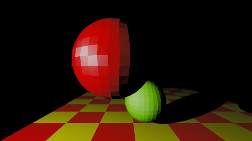
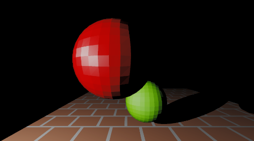
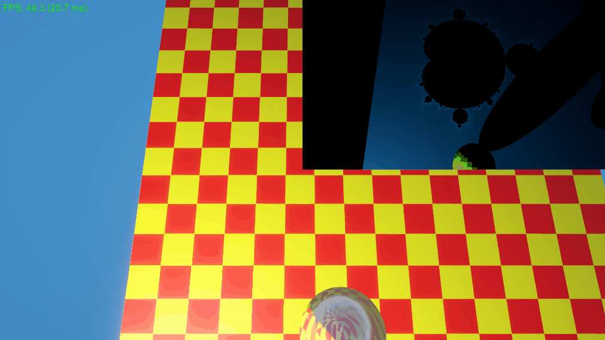
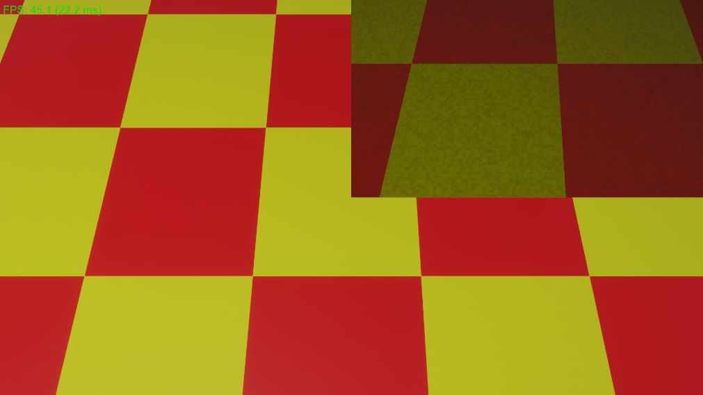
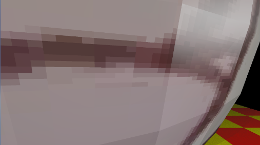

Procedural Shading
Textures

Checkerboard

Brick

Mandelbrot

Noise with checkerboard

Not filtered image texture
Filtered image texture

Image texture
Implementation Overview
Texture is just changing the diffuse section of the previous rendering pipeline.
Although it would be ideal to let every material have their own shader, I just put everything in the same shader for showcasing.
Texture mapping & procedural texture Implementation
// Compute shader
float3 GetDiffuseColor(Material mat, HitRecord rec)
{
//checkerboard
if (mat.materialType == 1)
{
float2 p = rec.uv * mat.checkerBoardFrequency;
float check = floor(p.x) + floor(p.y);
float n = noise(rec.uv * 500.0);
float3 baseColor = (int(abs(check)) % 2 == 0) ? mat.checkerBoardColorA : mat.checkerBoardColorB;
return baseColor * (0.8 + 0.4 * n);
}
// Mandelbrot
else if (mat.materialType == 2)
{
// 0~1 to x -2.0~1.0, y -1.5~1.5
float2 c = (rec.uv - 0.5) * 3.0 - float2(0.5, 0);
float2 z = float2(0, 0);
int iter = 0;
const int maxIter = 128;
[loop]
for (iter = 0; iter < maxIter; iter++)
{
// z = z^2 + c
float x = (z.x * z.x - z.y * z.y) + c.x;
float y = (2.0 * z.x * z.y) + c.y;
z = float2(x, y);
if (dot(z, z) > 10.0)
break;
}
if (iter == maxIter)
return float3(0, 0, 0);
//color
float smoothIter = iter - log2(log2(dot(z, z))) + 4.0;
float t = smoothIter * 0.05;
float3 color = 0.5 + 0.5 * cos(3.0 + t * 0.15 + float3(0.0, 0.6, 1.0));
return color;
}
//Procedural Brick
else if (mat.materialType == 3)
{
float2 uv = rec.uv * 10.0; // density
// Staggered bricks
if (floor(uv.y) % 2 == 0)
uv.x += 0.5;
float2 positionInBrick = frac(uv);
float2 edge = step(0.1, positionInBrick); // 0.1 mortar width
float isBrick = edge.x * edge.y;
float3 brickColor = float3(0.6, 0.2, 0.1);
float3 mortarColor = float3(0.8, 0.8, 0.8);
return lerp(mortarColor, brickColor, isBrick);
}
//Image mapping
else if (mat.materialType == 4)
{
float2 scrollingUV = rec.uv;
scrollingUV.x += _Time.y;
float2 atlasUV = mat.uvRect.xy + (frac(scrollingUV) * mat.uvRect.zw);
return _MainTexAtlas.SampleLevel(sampler_MainTexAtlas, atlasUV, 0).rgb;
}
return mat.diffuse;
}
// Compute shader
Triangle tri = _Triangles[hitTriangleIndex];
Material mat = _Materials[tri.materialIndex];
// normal
float3 N = normalize(cross(tri.v1 - tri.v0, tri.v2 - tri.v0));
// view (hitpoint to cam)
float3 V = normalize(-rayDirection); // k2
HitRecord rec;
rec.t = closestT;
rec.p = rayOrigin + closestT * rayDirection; //hit point
rec.normal = N;
rec.uv = GetInterpolatedUV(rec.p, tri);
float3 activeDiffuse = GetDiffuseColor(mat, rec);
Code explaination
- One big change that is not included in the code is that I moved all calculations to world space. In previous version it needs to multiply world to camera matrix every vertex, so the performance was not really good. After moving everything to world space, fps is now around 55~60(previously 40ish).
- Normal calculation somehow is reversed when I moved from camera space to world space. This is the new normal: float3 N = normalize(cross(tri.v1 - tri.v0, tri.v2 - tri.v0));
- Learned that Unity tend to pass _Time to GPU as a float4.
Technologies Used
Course:
Global Illumination
Year:
2026